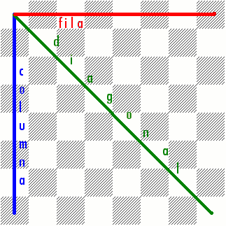
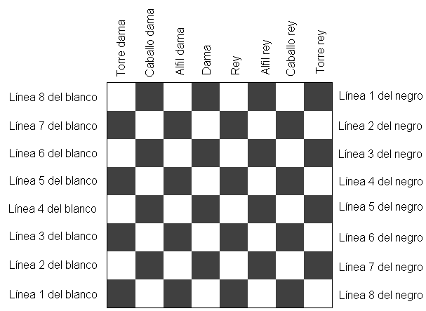
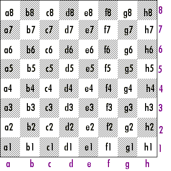

Nomenclatura
El ajedrez se juega sobre un tablero cuadrado, compuesto de ocho hileras de ocho casillas cada una, casillas que son de color claro y oscuro alternativamente.
La serie de casillas horizontales se denomina filas.
La serie de casillas verticales se denomina columnas.
De tal manera el tablero tiene 64 casillas, ocho columnas y ocho filas.

Sistema Descriptivo de notación de jugadas
El sistema descriptivo determina las casillas por dos coordenadas: la línea y la columna.

| Abreviación | Columna |
| TD | Torre de dama |
| CD | Caballo de dama |
| AD | Alfil de dama |
| D | Dama |
| R | Rey |
| AR | Alfil de rey |
| CR | Caballo de rey |
| TR | Torre de rey |
Sistema Algebraico de notación de jugadas
Es necesario tener un sistema para registrar los movimientos de una partida. El sistema algebraico es utilizado comunmente para anotar partidas. Se enumeran ocho líneas del 1 al 8, iniciando del bando de las blancas. De izquierda a derecha se definen las columnas alfabéticamente desde la 'a' hasta la 'h'.
